一、背景
虚拟线程是由JVM直接管理，通过 ForkJoinPool进行调度 ， 操作系统不再参与虚拟线程的生命周期，这就消除了可扩展性瓶颈。大规模的 JVM 应用程序可以处理数百万甚至数十亿的对象。由jdk19提出预览版本，jdk21提出正式版本，官方文档： ``https://openjdk.org/jeps/444
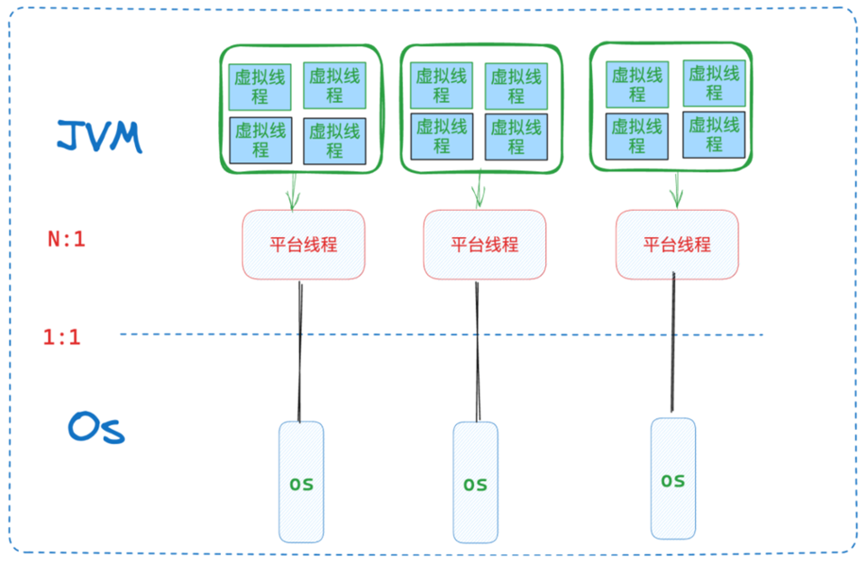
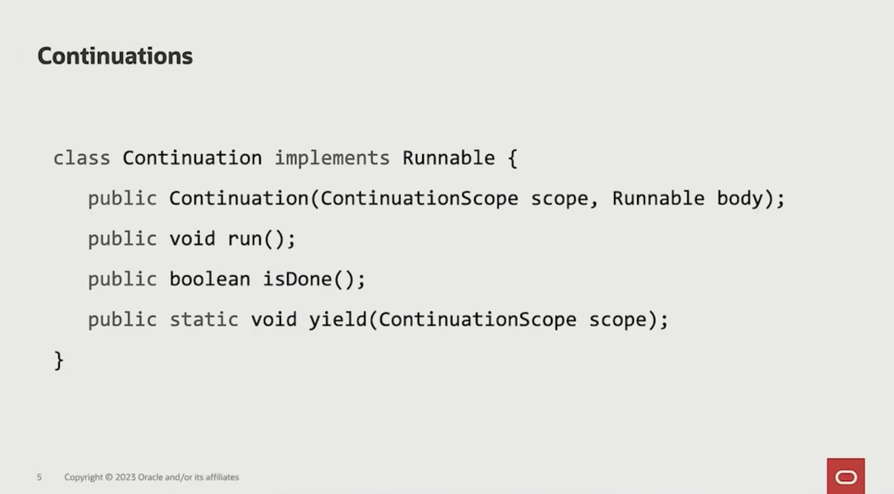
相关术语解析 ：
平 台线程 ： 平台线程是操作系统级别的线程，也就是传统意义上的线程，每个平台线程对应一个系统线程，创建和切换成本较高
载体线程(Carrier Thread)：实际执行虚拟线程任务的平台线程，使用的载体线程池是ForkJoinPool
虚拟线程 mount（挂载）：JVM 把虚拟线程分配给平台线程的操作称为 mount
unmount（卸载）：取消分配平台线程的操作称为 unmount
二、 与传统异步模式的对比
虚拟线程的引入不仅仅是java并发模型的优化，更重要的是对编程范式的革新。它通过降低并发编程门槛、简化代码结构，改变了开发者处理高并发场景的方式
2.1、代码可读性
业务举例： 订单获取 → 【机票产线信息db获取 & 酒店产线信息获取 & 火车票产线信息获取】并行 → 发送邮件
1、CompletableFuture
传统的CompletableFuture的demo：
public void processOrderAsync(String orderId) {
// 1. 获取订单
CompletableFuture<Order> orderFuture = CompletableFuture.supplyAsync(
() -> fetchOrder(orderId), ExecutorServiceMgr.getExecutorService("processOrderAsync"));
// 2. 并行计算费用
CompletableFuture<List<ServiceFee>> feesFuture = orderFuture.thenComposeAsync(order -> {
List<CompletableFuture<ServiceFee>> feeFutures = Arrays.asList(
CompletableFuture.supplyAsync(() -> queryFltInfo(order), ExecutorServiceMgr.getExecutorService("processOrderAsync")),
CompletableFuture.supplyAsync(() -> queryHtlInfo(order), ExecutorServiceMgr.getExecutorService("processOrderAsync")),
CompletableFuture.supplyAsync(() -> queryTrainInfo(order), ExecutorServiceMgr.getExecutorService("processOrderAsync"))
);
CompletableFuture<Void> allDone = CompletableFuture.allOf(
feeFutures.toArray(new CompletableFuture[0]));
return allDone.thenApply(v -> feeFutures.stream()
.map(future -> {
try {
return future.get(30, SECONDS);
} catch (Exception e) {
throw new CompletionException(e);
}
})
.collect(Collectors.toList()));
}, ExecutorServiceMgr.getExecutorService("processOrderAsync"));
// 3. 组合结果并发送邮件
CompletableFuture<Void> finalFuture = feesFuture.thenAcceptBothAsync(
orderFuture,
(fees, order) -> sendEmail(new EmailContent(order, fees)),
ExecutorServiceMgr.getExecutorService("processOrderAsync")
).get(timeoutMinutes, TimeUnit.MINUTES);
}
2、虚拟线程
相较之下虚拟线程发生了较大的编程范式转变，从异步回调变成了"同步"的写法，会更加便于理解
public void processOrderVirtualThread(String orderId) {
try (var executor = Executors.newVirtualThreadPerTaskExecutor()) {
// 1. 获取订单（同步写法）
Order order = fetchOrder(orderId);
// 2. 提交并行任务
var flightFuture = executor.submit(() -> queryFltInfo(order));
var hotelFuture = executor.submit(() -> queryHtlInfo(order));
var trainFuture = executor.submit(() -> queryTrainInfo(order));
// 3. 等待结果(同步等待但不会阻塞平台线程）
List<ServiceFee> fees = List.of(
flightFuture.get(30, SECONDS), // 挂起点 1
hotelFuture.get(30, SECONDS), // 挂起点 2
trainFuture.get(30, SECONDS) // 挂起点 3
);
// 4. 发送邮件
sendEmail(new EmailContent(order, fees));
} catch (Exception e) {
System.out.println("处理失败: " + e.getMessage());
}
}
通过这个demo对比也可以理解虚拟线程的作用
从关键过程着手：
List
flightFuture.get(30, SECONDS), // 挂起点 1
hotelFuture.get(30, SECONDS), // 挂起点 2
trainFuture.get(30, SECONDS) // 挂起点 3
);
对于这里的三个产线的信息获取，虽然是同步但是 运行时表现为非阻塞现象 ，本质上来说其实还是阻塞的，只是换了阻塞的对象，从平台线程换成了廉价的虚拟线程
这是基于虚拟线程的unmount，在阻塞点进行卸载，将虚拟线程从平台线程上卸载下来。此时该载体线程转而去执行其他的虚拟线程的操作，所以对于平台线程来说是没有阻塞的
当Get()拿到了结果后，虚拟线程再回来mount到平台线程上，继续执行操作，重新装上的载体线程与之前的载体线程也可能不是同一个，所以对于抽象到虚拟线程的层面来说时候阻塞的
这种方式对于传统线程直接阻塞平台线程的操作来说，虚拟线程提高了平台线程的利用率，从底层实现了少量平台线程就可以处理大量请求的可能
这个关键过程这也说明了对虚拟线程的一个误区： 错误地认为vt关注的性能重点在于上下文切换的速度， 但其实是vt主要关注的是提高以线程阻塞方式编写代码的服务的吞吐量
2.2、线程池参数配置
关于线程池的参数配置依赖开发者的经验进行业务估算，易引发资源不足或者资源浪费，
池化的目的是避免昂贵的线程创建成本，而 虚拟线程通过 轻量化资源模型 和 JVM 级自动调度 ，对于虚拟线程来说创建成本可忽略不计，从根本上消解了池化的必要性。
这里有个值得注意的点是，虚拟线程并不是说不需要去池化了， 如果完全不再使用线程池也就无法通过原来的线程池，控制背压了，如果下游服务 P99 在 30s，虚拟线程会不断创建，不断积累在内存中，直到充满内存。 进而造成不断 GC，但是回收不了多少内存，导致 CPU 飙高 对于传统线程池来说，由于最大线程+队列的组合设计，有一个隐形的概念，即通过最大线程数控制最多并发多少个请求，也就是最多等待多少个请求，其他的就会到队列中。 但是虚拟线程默认就是通过内存大小控制你并发多少个请求了。所以一般虚拟线程需要配合信号量使用，控制这个并发大小，即背压。虚拟线程的廉价体现在各指标上：
| 指标 | 虚拟线程 | 平台线程（池化） |
|---|---|---|
| 单线程内存开销 | ~500B - 256KB | ~1MB（默认栈） |
| 创建耗时（单线程） | ~0.1μs | ~10μs |
| 最大并发能力（1GB 堆） | ~2,000,000 | ~1,000 |
| 阻塞操作开销 | 0 载体线程占用 | 1 线程阻塞 |
简单来说：
虚拟线程是KB级别的，平台线程是MB级别的
2.3、便于调试
因为会在线程池中拿到多个不同的线程去操作，其调度是依赖os的，所以传统的异步操作会导致堆栈信息碎片化，在调试的时候非常困难
前面讲到虚拟线程在get()操作阻塞的时候是阻塞的虚拟线程而不是平台线程，vt的调度也是jvm显示地进行yield/resume 控制，而这里 对于载体线程的切换，对于开发者是透明无感的
对开发来说，这些操作是在单一逻辑线程执行，我们在调试的时候面对的调试信息是在虚拟线程的维度，与物理线程的信息是解耦的，这在调试的时候也会更符合我们的直觉
此处vt对于golang的相关实现来说的有点也是好定位，jvm从易定位触发，jfr可以完整监控vt
三、虚拟线程的原理
原理的oracle视频学习链接： ``https://www.bilibili.com/video/BV1Ub4y1M7L3/?share_source=copy_web&vd_source=d30c780580db9da56e2e4f9fa6acf1a5
虚拟线程 = continuation + scheduler
scheduler本质上是一个ExecutorService
3.1、continuation
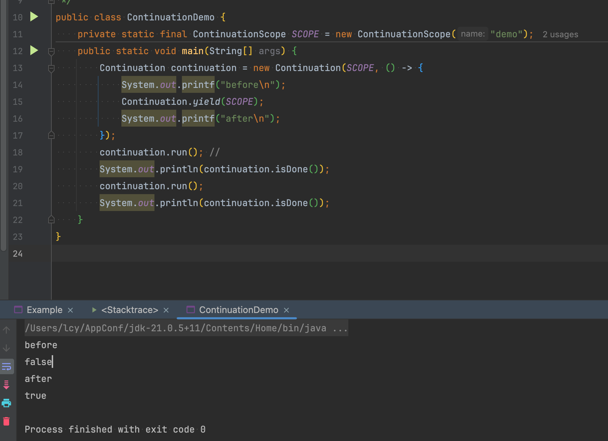
这个demo可以看出来在 continuation 被第一次调用的时候只输出了before，这说明此时线程执行到yield后就没有继续执行了，此时调用isDone()方法输出的false，也说明没有继续执行
第二次调用的时候是关键，可以看出第二次调用的时候只输出了after，并没有输出"before\n after"说明第二次调用的时候并不是从头开始调用的，而是从上次yield的地方继续执行
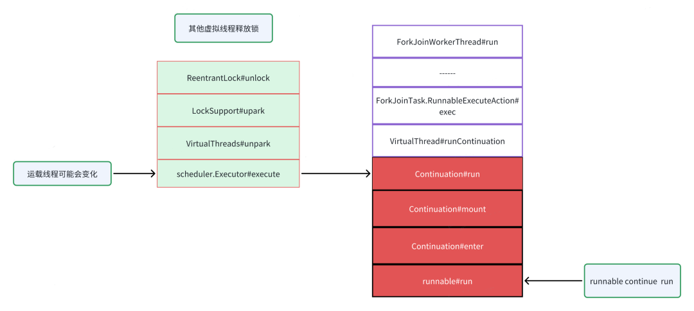
package com.example.demo;
import jdk.internal.vm.Continuation;
import jdk.internal.vm.ContinuationScope;
/**
* @author congyanli
* @date 2025/2/18
*/
public class ContinuationDemo {
private static final ContinuationScope SCOPE = new ContinuationScope("demo");
public static void main(String[] args) {
Continuation continuation = new Continuation(SCOPE, () -> {
System.out.printf("before\n");
Continuation.yield(SCOPE);
System.out.printf("after\n");
});
continuation.run(); //
System.out.println(continuation.isDone());
continuation.run();
System.out.println(continuation.isDone());
}
}
这部分 continuation 堆栈复制是虚拟线程实现的核心机制，在遇到阻塞点进行yield的时候，将堆栈信息保存的continuation中，等到continuation第二次run()的时候，将堆栈信息再复制回去，这里不一定还是会复制到原本的载体线程 上
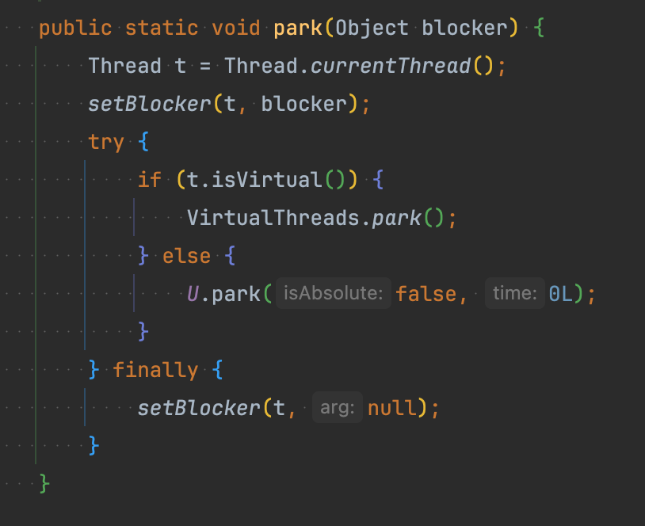
3.2、locksupport
对于同步时绕不开的java.util.concurrent.locks包下的locksupport，可以分析源码看出来jdk21对于虚拟线程的处理，首先会判断当前线程是否是虚拟线程，如果当前线程不是虚拟线程，则park平台线程
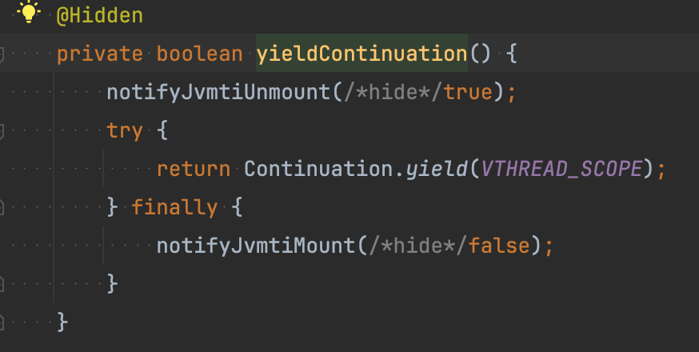
如果当前线程是虚拟线程的话，对虚拟线程进行操作VirtualThreads.park();
这段源码深入进去的话核心其实就是Continuation.yield(VTHREAD_SCOPE);也就是前面demo中的yield操作，在yield操作前后进行了卸载和重装的打标
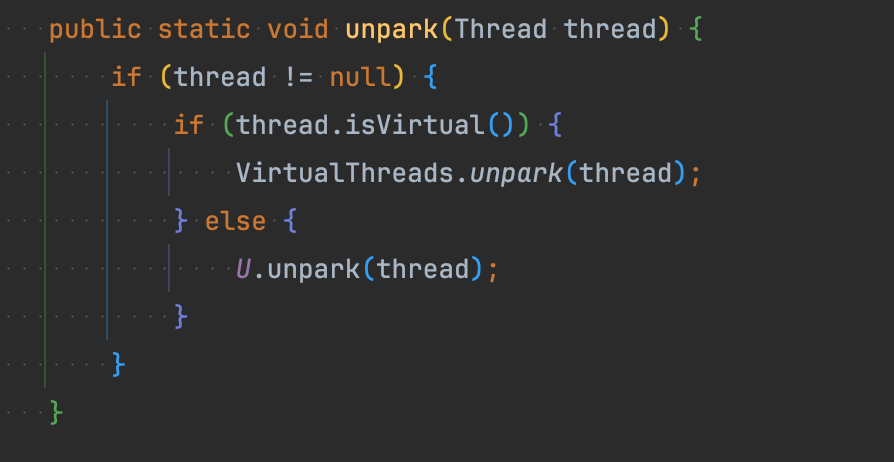
对于unpark的代码其实也是对虚拟线程做了新操作
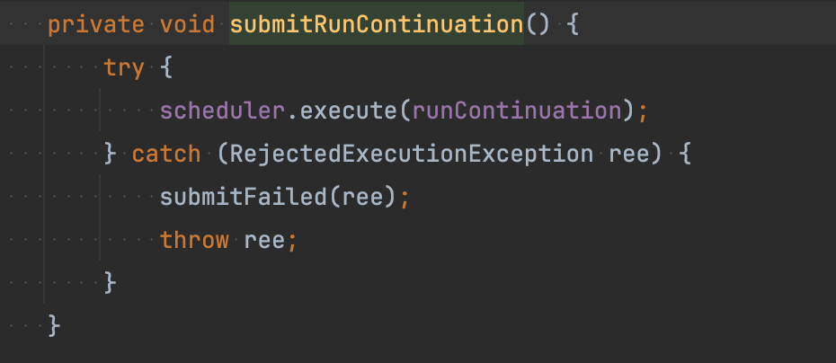
u npark的源码深入进去后的核心操作就是scheduler进行的调用操作：scheduler.execute(Continuation)，是让之前yield的Continuation继续执行，也就是demo中的第二次run()调用
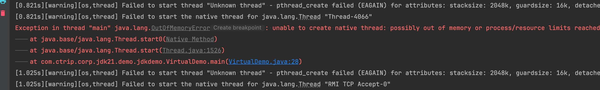
3.3、scheduler
通过对lock的源码分析可以看 出scheduler在其中的作用只是调度 Continuation的 run()方法，去运行实际包装的用户任务的 Runnable ， scheduler的底层是使用的forkjoinpool线程池去做调度，这个线程池突出的特点是任务窃取以及防死锁的特点。
四、虚拟线程简单实践
创建虚拟线程的方法：
| Thread.startVirtualThread(） | 创建并启动一个虚拟线程 |
|---|---|
| Thread.ofVirtual().unstarted() | 创建一个虚拟线程，在通过start()方法启动该线程 |
| Executors.newVirtualThreadPerTaskExecutor() | 通过它的submit()方法提交任务 |
| Thread.ofVirtual().factory().newThread() | 创建一个虚拟线程工厂，再通过该工厂创建虚拟线程并启动 |
| Thread . ofPlatform (). unstarted ( new DemoThread ()) | 创建一个平台线程 |
demo：
/**
* @author congyanli
* @date 2025/2/15
*/
public class VirtualDemo {
public static void doWork() {
try {
System.out.println(Thread.currentThread().getName() + " is working");
// 虚拟线程的生命周期中在这里进行了卸载操作
Thread.sleep(3000);
// 休眠结束重新挂载
} catch (Exception e) {
}
}
public static void main(String[] args) {
int MAX = 1000_000;
for (int i = 0; i < MAX; i++) {
// 使用线程导致OOM
new Thread(VirtualDemo::doWork).start();
// 使用虚拟线程会正常走到结束
// Thread.startVirtualThread(VirtualDemo::doWork);
}
try {
Thread.sleep(5000);
} catch (Exception e) {
}
System.out.println("===================================END=======================================");
}
}
对于直接创建百万级别的平台线程，会造成oom，但是创建百万虚拟线程则会正常执行
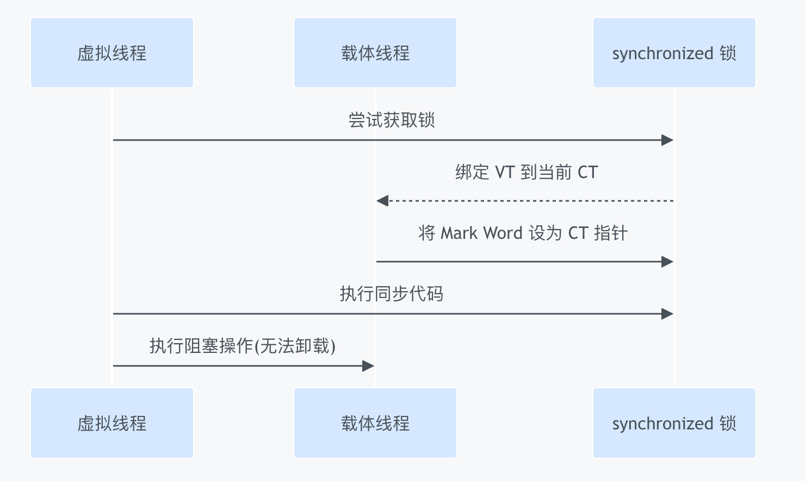
五、虚拟线程的绑定问题
对于Native 代码阻塞和 synchronized两个情况有绑定死锁情况
5.1、 synchronized导致的vt绑定
5.1.1.synchronized 的锁绑定流程
- 对象头标记 ：使用对象头中的 Mark Word 直接存储 持有锁的平台线程指针 （JavaThread*）。
- 虚拟线程问题 ：当虚拟线程（无固定平台线程）获取锁时，JVM 必须将其绑定到当前载体线程（CT）以记录锁持有者
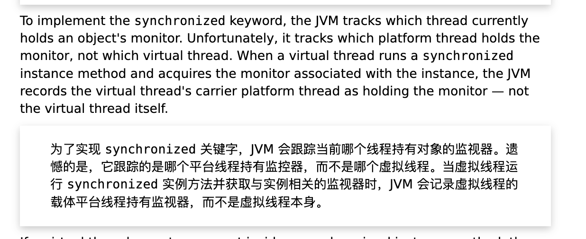
官方文档（ https://openjdk.org/jeps/491 ）中对于该问题的解释
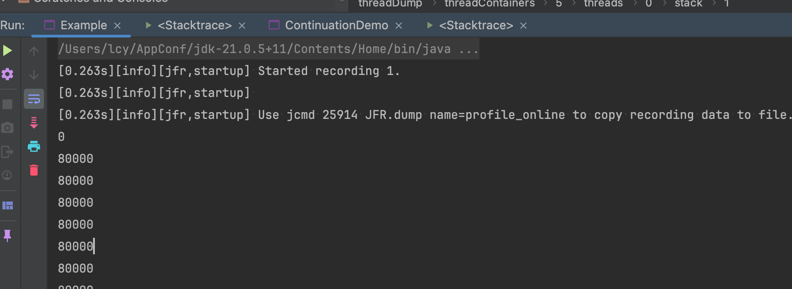
如果单纯sync发生线程绑定，会导致性能退化，虚拟线程变成平台线程执行，会影响并行度
5.1.2、死锁场景
相关讨论： https://www.reddit.com/r/java/comments/1512xuo/virtual_threads_interesting_deadlock/
死锁场景通常出现在 ReentrantLock + synchronized一起使用的场景，单纯使用二者之一都不会出现问题
复现demo
public class Example {
private static final int NUMBER_OF_CORES = Runtime.getRuntime().availableProcessors();
private static ReentrantLock lock = new ReentrantLock();
private volatile static int count = 0;
public static void main(String[] args) throws InterruptedException {
for (int i = 0; i < 100; i++) {
Thread.startVirtualThread(() -> {
doSthWithLock();
synchronized (Example.class) {
doSthWithLock();
}
});
}
while (true) {
System.out.println(count);
Thread.sleep(1000);
}
}
private static void doSthWithLock() {
lock.lock();
for (int i = 0; i < 10000; i++) {
count++;
}
lock.unlock();
}
}
这里用100个线程的话由于竞争激烈所以比较好复现，但是对于这个问题的分析用NUMBER_OF_CORES+1去复现场景拿到的dump文件会更好去分析
基于NUMBER_OF_CORES+1情况去分析， 8核情况下 → 9 个 VT & 8个平台线程
死锁表现：
理论count= 9*20000 = 180000，但是实际输出80000
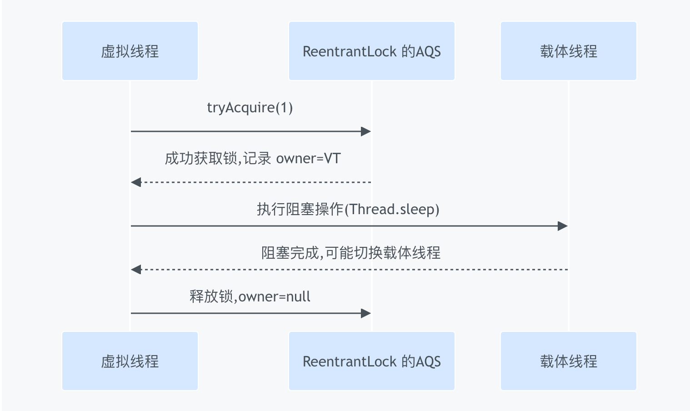
现象分析：
死锁输出80000说明有8个线程进行了synchronized外的锁，但是进行同步块内的循环相加
复现的dump文件，通过idea的analyze stack trace or thread dump功能进行dump文件分析进行跳转，搜索park可以看到有两个平台线程分别在synchronized的内外进行了park
对于8核cpu来说，只有8个平台线程供vt切换，首先不仅进入synchronized块会被pin住， 等待锁被阻塞的时候也会被pin住，因为其平台线程持有了synchronized的monitor
park在synchronized同步块的虚拟线程A进入了ReentrantLock锁的AQS队列，拿到了lock资源以及synchronized资源，但是其实没有成功上锁，不然count就不是80000了，此时线程B持有了ReentrantLock资源和synchronized资源，在AQS队列中等待上锁
其余线程进入synchronized的时候被pin在了其载体线程上，导致vt线程退化成平台线程，不能供其他vt线程进行载体线程切换，等待synchronized资源的时候被pin住，到这里的时候8个平台线程都已经被pin住，没有平台线程去做vt切换了
能输出80000而不是90000，说明有一个线程B卡在了第一个ReentrantLock锁资源的获取上，dump文件也可以看出来有一个线程在synchronized同步块外发生了park，对于locksupport.park()操作不会释放任何锁，所以线程A还是持有了ReentrantLock资源，没有加10000，在等线程切换
此时死锁成环的原因，稀缺的并不是锁资源，因为锁资源已经持有了，稀缺的是平台线程资源，没有os线程供切换
dump文件
{
"threadDump": {
"processId": "25914",
"time": "2025-02-17T06:47:14.241070Z",
"runtimeVersion": "21.0.5+11-LTS",
"threadContainers": [
{
"container": "<root>",
"parent": null,
"owner": null,
"threads": [
{
"tid": "1",
"name": "main",
"stack": [
"java.base\/java.lang.Thread.sleep0(Native Method)",
"java.base\/java.lang.Thread.sleep(Thread.java:509)",
"com.example.demo.Example.main(Example.java:30)"
]
},
{
"tid": "9",
"name": "Reference Handler",
"stack": [
"java.base\/java.lang.ref.Reference.waitForReferencePendingList(Native Method)",
"java.base\/java.lang.ref.Reference.processPendingReferences(Reference.java:246)",
"java.base\/java.lang.ref.Reference$ReferenceHandler.run(Reference.java:208)"
]
},
{
"tid": "10",
"name": "Finalizer",
"stack": [
"java.base\/java.lang.Object.wait0(Native Method)",
"java.base\/java.lang.Object.wait(Object.java:366)",
"java.base\/java.lang.Object.wait(Object.java:339)",
"java.base\/java.lang.ref.NativeReferenceQueue.await(NativeReferenceQueue.java:48)",
"java.base\/java.lang.ref.ReferenceQueue.remove0(ReferenceQueue.java:158)",
"java.base\/java.lang.ref.NativeReferenceQueue.remove(NativeReferenceQueue.java:89)",
"java.base\/java.lang.ref.Finalizer$FinalizerThread.run(Finalizer.java:173)"
]
},
{
"tid": "11",
"name": "Signal Dispatcher",
"stack": [
]
},
{
"tid": "18",
"name": "Common-Cleaner",
"stack": [
"java.base\/jdk.internal.misc.Unsafe.park(Native Method)",
"java.base\/java.util.concurrent.locks.LockSupport.parkNanos(LockSupport.java:269)",
"java.base\/java.util.concurrent.locks.AbstractQueuedSynchronizer$ConditionObject.await(AbstractQueuedSynchronizer.java:1852)",
"java.base\/java.lang.ref.ReferenceQueue.await(ReferenceQueue.java:71)",
"java.base\/java.lang.ref.ReferenceQueue.remove0(ReferenceQueue.java:143)",
"java.base\/java.lang.ref.ReferenceQueue.remove(ReferenceQueue.java:218)",
"java.base\/jdk.internal.ref.CleanerImpl.run(CleanerImpl.java:140)",
"java.base\/java.lang.Thread.run(Thread.java:1583)",
"java.base\/jdk.internal.misc.InnocuousThread.run(InnocuousThread.java:186)"
]
},
{
"tid": "19",
"name": "Monitor Ctrl-Break",
"stack": [
"java.base\/sun.nio.ch.SocketDispatcher.read0(Native Method)",
"java.base\/sun.nio.ch.SocketDispatcher.read(SocketDispatcher.java:47)",
"java.base\/sun.nio.ch.NioSocketImpl.tryRead(NioSocketImpl.java:256)",
"java.base\/sun.nio.ch.NioSocketImpl.implRead(NioSocketImpl.java:307)",
"java.base\/sun.nio.ch.NioSocketImpl.read(NioSocketImpl.java:346)",
"java.base\/sun.nio.ch.NioSocketImpl$1.read(NioSocketImpl.java:796)",
"java.base\/java.net.Socket$SocketInputStream.read(Unknown Source)",
"java.base\/sun.nio.cs.StreamDecoder.readBytes(StreamDecoder.java:350)",
"java.base\/sun.nio.cs.StreamDecoder.implRead(StreamDecoder.java:393)",
"java.base\/sun.nio.cs.StreamDecoder.lockedRead(StreamDecoder.java:217)",
"java.base\/sun.nio.cs.StreamDecoder.read(StreamDecoder.java:171)",
"java.base\/java.io.InputStreamReader.read(InputStreamReader.java:188)",
"java.base\/java.io.BufferedReader.fill(BufferedReader.java:160)",
"java.base\/java.io.BufferedReader.implReadLine(BufferedReader.java:370)",
"java.base\/java.io.BufferedReader.readLine(BufferedReader.java:347)",
"java.base\/java.io.BufferedReader.readLine(BufferedReader.java:436)",
"com.intellij.rt.execution.application.AppMainV2$1.run(AppMainV2.java:54)"
]
},
{
"tid": "20",
"name": "JFR Recorder Thread",
"stack": [
]
},
{
"tid": "21",
"name": "JFR Periodic Tasks",
"stack": [
"java.base\/java.lang.Object.wait0(Native Method)",
"java.base\/java.lang.Object.wait(Object.java:366)",
"jdk.jfr\/jdk.jfr.internal.PlatformRecorder.takeNap(PlatformRecorder.java:559)",
"jdk.jfr\/jdk.jfr.internal.PlatformRecorder.periodicTask(PlatformRecorder.java:527)",
"jdk.jfr\/jdk.jfr.internal.PlatformRecorder.lambda$startDiskMonitor$1(PlatformRecorder.java:446)",
"java.base\/java.lang.Thread.run(Thread.java:1583)"
]
},
{
"tid": "29",
"name": "Notification Thread",
"stack": [
]
},
{
"tid": "47",
"name": "Attach Listener",
"stack": [
"java.base\/java.lang.Thread.getStackTrace(Thread.java:2451)",
"java.base\/jdk.internal.vm.ThreadDumper.dumpThreadToJson(ThreadDumper.java:270)",
"java.base\/jdk.internal.vm.ThreadDumper.dumpThreadsToJson(ThreadDumper.java:242)",
"java.base\/jdk.internal.vm.ThreadDumper.dumpThreadsToJson(ThreadDumper.java:206)",
"java.base\/jdk.internal.vm.ThreadDumper.dumpThreadsToFile(ThreadDumper.java:117)",
"java.base\/jdk.internal.vm.ThreadDumper.dumpThreadsToJson(ThreadDumper.java:85)"
]
},
{
"tid": "49",
"name": "RMI TCP Accept-0",
"stack": [
"java.base\/sun.nio.ch.Net.accept(Native Method)",
"java.base\/sun.nio.ch.NioSocketImpl.accept(NioSocketImpl.java:748)",
"java.base\/java.net.ServerSocket.implAccept(ServerSocket.java:698)",
"java.base\/java.net.ServerSocket.platformImplAccept(ServerSocket.java:663)",
"java.base\/java.net.ServerSocket.implAccept(ServerSocket.java:639)",
"java.base\/java.net.ServerSocket.implAccept(ServerSocket.java:585)",
"java.base\/java.net.ServerSocket.accept(ServerSocket.java:543)",
"jdk.management.agent\/sun.management.jmxremote.LocalRMIServerSocketFactory$1.accept(LocalRMIServerSocketFactory.java:52)",
"java.rmi\/sun.rmi.transport.tcp.TCPTransport$AcceptLoop.executeAcceptLoop(TCPTransport.java:424)",
"java.rmi\/sun.rmi.transport.tcp.TCPTransport$AcceptLoop.run(TCPTransport.java:388)",
"java.base\/java.lang.Thread.run(Thread.java:1583)"
]
},
{
"tid": "32",
"name": "",
"stack": [
"java.base\/jdk.internal.misc.Unsafe.park(Native Method)",
"java.base\/java.lang.VirtualThread.parkOnCarrierThread(VirtualThread.java:675)",
"java.base\/java.lang.VirtualThread.park(VirtualThread.java:607)",
"java.base\/java.lang.System$2.parkVirtualThread(System.java:2643)",
"java.base\/jdk.internal.misc.VirtualThreads.park(VirtualThreads.java:54)",
"java.base\/java.util.concurrent.locks.LockSupport.park(LockSupport.java:219)",
"java.base\/java.util.concurrent.locks.AbstractQueuedSynchronizer.acquire(AbstractQueuedSynchronizer.java:754)",
"java.base\/java.util.concurrent.locks.AbstractQueuedSynchronizer.acquire(AbstractQueuedSynchronizer.java:990)",
"java.base\/java.util.concurrent.locks.ReentrantLock$Sync.lock(ReentrantLock.java:153)",
"java.base\/java.util.concurrent.locks.ReentrantLock.lock(ReentrantLock.java:322)",
"com.example.demo.Example.doSthWithLock(Example.java:36)",
"com.example.demo.Example.lambda$main$0(Example.java:24)",
"java.base\/java.lang.VirtualThread.run(VirtualThread.java:329)"
]
},
{
"tid": "33",
"name": "",
"stack": [
"com.example.demo.Example.lambda$main$0(Example.java:24)",
"java.base\/java.lang.VirtualThread.run(VirtualThread.java:329)"
]
},
{
"tid": "34",
"name": "",
"stack": [
"com.example.demo.Example.lambda$main$0(Example.java:24)",
"java.base\/java.lang.VirtualThread.run(VirtualThread.java:329)"
]
},
{
"tid": "35",
"name": "",
"stack": [
"com.example.demo.Example.lambda$main$0(Example.java:24)",
"java.base\/java.lang.VirtualThread.run(VirtualThread.java:329)"
]
},
{
"tid": "36",
"name": "",
"stack": [
"com.example.demo.Example.lambda$main$0(Example.java:24)",
"java.base\/java.lang.VirtualThread.run(VirtualThread.java:329)"
]
},
{
"tid": "37",
"name": "",
"stack": [
"com.example.demo.Example.lambda$main$0(Example.java:24)",
"java.base\/java.lang.VirtualThread.run(VirtualThread.java:329)"
]
},
{
"tid": "38",
"name": "",
"stack": [
"com.example.demo.Example.lambda$main$0(Example.java:24)",
"java.base\/java.lang.VirtualThread.run(VirtualThread.java:329)"
]
},
{
"tid": "39",
"name": "",
"stack": [
"java.base\/java.lang.VirtualThread.park(VirtualThread.java:596)",
"java.base\/java.lang.System$2.parkVirtualThread(System.java:2643)",
"java.base\/jdk.internal.misc.VirtualThreads.park(VirtualThreads.java:54)",
"java.base\/java.util.concurrent.locks.LockSupport.park(LockSupport.java:219)",
"java.base\/java.util.concurrent.locks.AbstractQueuedSynchronizer.acquire(AbstractQueuedSynchronizer.java:754)",
"java.base\/java.util.concurrent.locks.AbstractQueuedSynchronizer.acquire(AbstractQueuedSynchronizer.java:990)",
"java.base\/java.util.concurrent.locks.ReentrantLock$Sync.lock(ReentrantLock.java:153)",
"java.base\/java.util.concurrent.locks.ReentrantLock.lock(ReentrantLock.java:322)",
"com.example.demo.Example.doSthWithLock(Example.java:36)",
"com.example.demo.Example.lambda$main$0(Example.java:22)",
"java.base\/java.lang.VirtualThread.run(VirtualThread.java:329)"
]
},
{
"tid": "30",
"name": "",
"stack": [
"com.example.demo.Example.lambda$main$0(Example.java:24)",
"java.base\/java.lang.VirtualThread.run(VirtualThread.java:329)"
]
}
],
"threadCount": "20"
},
{
"container": "java.util.concurrent.ThreadPoolExecutor@3cbdea3f",
"parent": "<root>",
"owner": null,
"threads": [
],
"threadCount": "0"
},
{
"container": "java.util.concurrent.ScheduledThreadPoolExecutor@9225652",
"parent": "<root>",
"owner": null,
"threads": [
],
"threadCount": "0"
},
{
"container": "ForkJoinPool.commonPool\/jdk.internal.vm.SharedThreadContainer@18b5407e",
"parent": "<root>",
"owner": null,
"threads": [
],
"threadCount": "0"
},
{
"container": "java.util.concurrent.ThreadPoolExecutor@3271cad8",
"parent": "<root>",
"owner": null,
"threads": [
],
"threadCount": "0"
},
{
"container": "ForkJoinPool-1\/jdk.internal.vm.SharedThreadContainer@6e48fbd4",
"parent": "<root>",
"owner": null,
"threads": [
{
"tid": "31",
"name": "ForkJoinPool-1-worker-1",
"stack": [
"java.base\/jdk.internal.vm.Continuation.run(Continuation.java:251)",
"java.base\/java.lang.VirtualThread.runContinuation(VirtualThread.java:245)",
"java.base\/java.util.concurrent.ForkJoinTask$RunnableExecuteAction.exec(ForkJoinTask.java:1423)",
"java.base\/java.util.concurrent.ForkJoinTask.doExec(ForkJoinTask.java:387)",
"java.base\/java.util.concurrent.ForkJoinPool$WorkQueue.topLevelExec(ForkJoinPool.java:1312)",
"java.base\/java.util.concurrent.ForkJoinPool.scan(ForkJoinPool.java:1843)",
"java.base\/java.util.concurrent.ForkJoinPool.runWorker(ForkJoinPool.java:1808)",
"java.base\/java.util.concurrent.ForkJoinWorkerThread.run(ForkJoinWorkerThread.java:188)"
]
},
{
"tid": "40",
"name": "ForkJoinPool-1-worker-2",
"stack": [
"java.base\/jdk.internal.vm.Continuation.run(Continuation.java:248)",
"java.base\/java.lang.VirtualThread.runContinuation(VirtualThread.java:245)",
"java.base\/java.util.concurrent.ForkJoinTask$RunnableExecuteAction.exec(ForkJoinTask.java:1423)",
"java.base\/java.util.concurrent.ForkJoinTask.doExec(ForkJoinTask.java:387)",
"java.base\/java.util.concurrent.ForkJoinPool$WorkQueue.topLevelExec(ForkJoinPool.java:1312)",
"java.base\/java.util.concurrent.ForkJoinPool.scan(ForkJoinPool.java:1843)",
"java.base\/java.util.concurrent.ForkJoinPool.runWorker(ForkJoinPool.java:1808)",
"java.base\/java.util.concurrent.ForkJoinWorkerThread.run(ForkJoinWorkerThread.java:188)"
]
},
{
"tid": "41",
"name": "ForkJoinPool-1-worker-3",
"stack": [
"java.base\/jdk.internal.vm.Continuation.run(Continuation.java:248)",
"java.base\/java.lang.VirtualThread.runContinuation(VirtualThread.java:245)",
"java.base\/java.util.concurrent.ForkJoinTask$RunnableExecuteAction.exec(ForkJoinTask.java:1423)",
"java.base\/java.util.concurrent.ForkJoinTask.doExec(ForkJoinTask.java:387)",
"java.base\/java.util.concurrent.ForkJoinPool$WorkQueue.topLevelExec(ForkJoinPool.java:1312)",
"java.base\/java.util.concurrent.ForkJoinPool.scan(ForkJoinPool.java:1843)",
"java.base\/java.util.concurrent.ForkJoinPool.runWorker(ForkJoinPool.java:1808)",
"java.base\/java.util.concurrent.ForkJoinWorkerThread.run(ForkJoinWorkerThread.java:188)"
]
},
{
"tid": "42",
"name": "ForkJoinPool-1-worker-4",
"stack": [
"java.base\/jdk.internal.vm.Continuation.run(Continuation.java:251)",
"java.base\/java.lang.VirtualThread.runContinuation(VirtualThread.java:245)",
"java.base\/java.util.concurrent.ForkJoinTask$RunnableExecuteAction.exec(ForkJoinTask.java:1423)",
"java.base\/java.util.concurrent.ForkJoinTask.doExec(ForkJoinTask.java:387)",
"java.base\/java.util.concurrent.ForkJoinPool$WorkQueue.topLevelExec(ForkJoinPool.java:1312)",
"java.base\/java.util.concurrent.ForkJoinPool.scan(ForkJoinPool.java:1843)",
"java.base\/java.util.concurrent.ForkJoinPool.runWorker(ForkJoinPool.java:1808)",
"java.base\/java.util.concurrent.ForkJoinWorkerThread.run(ForkJoinWorkerThread.java:188)"
]
},
{
"tid": "43",
"name": "ForkJoinPool-1-worker-5",
"stack": [
"java.base\/jdk.internal.vm.Continuation.run(Continuation.java:251)",
"java.base\/java.lang.VirtualThread.runContinuation(VirtualThread.java:245)",
"java.base\/java.util.concurrent.ForkJoinTask$RunnableExecuteAction.exec(ForkJoinTask.java:1423)",
"java.base\/java.util.concurrent.ForkJoinTask.doExec(ForkJoinTask.java:387)",
"java.base\/java.util.concurrent.ForkJoinPool$WorkQueue.topLevelExec(ForkJoinPool.java:1312)",
"java.base\/java.util.concurrent.ForkJoinPool.scan(ForkJoinPool.java:1843)",
"java.base\/java.util.concurrent.ForkJoinPool.runWorker(ForkJoinPool.java:1808)",
"java.base\/java.util.concurrent.ForkJoinWorkerThread.run(ForkJoinWorkerThread.java:188)"
]
},
{
"tid": "44",
"name": "ForkJoinPool-1-worker-6",
"stack": [
"java.base\/jdk.internal.vm.Continuation.run(Continuation.java:251)",
"java.base\/java.lang.VirtualThread.runContinuation(VirtualThread.java:245)",
"java.base\/java.util.concurrent.ForkJoinTask$RunnableExecuteAction.exec(ForkJoinTask.java:1423)",
"java.base\/java.util.concurrent.ForkJoinTask.doExec(ForkJoinTask.java:387)",
"java.base\/java.util.concurrent.ForkJoinPool$WorkQueue.topLevelExec(ForkJoinPool.java:1312)",
"java.base\/java.util.concurrent.ForkJoinPool.scan(ForkJoinPool.java:1843)",
"java.base\/java.util.concurrent.ForkJoinPool.runWorker(ForkJoinPool.java:1808)",
"java.base\/java.util.concurrent.ForkJoinWorkerThread.run(ForkJoinWorkerThread.java:188)"
]
},
{
"tid": "45",
"name": "ForkJoinPool-1-worker-7",
"stack": [
"java.base\/jdk.internal.vm.Continuation.run(Continuation.java:251)",
"java.base\/java.lang.VirtualThread.runContinuation(VirtualThread.java:245)",
"java.base\/java.util.concurrent.ForkJoinTask$RunnableExecuteAction.exec(ForkJoinTask.java:1423)",
"java.base\/java.util.concurrent.ForkJoinTask.doExec(ForkJoinTask.java:387)",
"java.base\/java.util.concurrent.ForkJoinPool$WorkQueue.topLevelExec(ForkJoinPool.java:1312)",
"java.base\/java.util.concurrent.ForkJoinPool.scan(ForkJoinPool.java:1843)",
"java.base\/java.util.concurrent.ForkJoinPool.runWorker(ForkJoinPool.java:1808)",
"java.base\/java.util.concurrent.ForkJoinWorkerThread.run(ForkJoinWorkerThread.java:188)"
]
},
{
"tid": "46",
"name": "ForkJoinPool-1-worker-8",
"stack": [
"java.base\/jdk.internal.vm.Continuation.run(Continuation.java:251)",
"java.base\/java.lang.VirtualThread.runContinuation(VirtualThread.java:245)",
"java.base\/java.util.concurrent.ForkJoinTask$RunnableExecuteAction.exec(ForkJoinTask.java:1423)",
"java.base\/java.util.concurrent.ForkJoinTask.doExec(ForkJoinTask.java:387)",
"java.base\/java.util.concurrent.ForkJoinPool$WorkQueue.topLevelExec(ForkJoinPool.java:1312)",
"java.base\/java.util.concurrent.ForkJoinPool.scan(ForkJoinPool.java:1843)",
"java.base\/java.util.concurrent.ForkJoinPool.runWorker(ForkJoinPool.java:1808)",
"java.base\/java.util.concurrent.ForkJoinWorkerThread.run(ForkJoinWorkerThread.java:188)"
]
}
],
"threadCount": "8"
},
{
"container": "java.util.concurrent.ScheduledThreadPoolExecutor@575fd379",
"parent": "<root>",
"owner": null,
"threads": [
],
"threadCount": "0"
}
]
}
}
5.2、解决方案
5.2.1、使用ReentrantLock
对于 sync发生线程绑定，会导致性能退化的情况，目前的解决办法是使用 ReentrantLock进行替代
ReentrantLock的底层实现框架是AQS，而AQS对于虚拟线程是无感知兼容的，相比于 synchronized对于平台线程的绑定，AQS的owner字段记录的是 虚拟线程自身，无需绑定到特定载体线程，所以天然支持虚拟线程的卸载
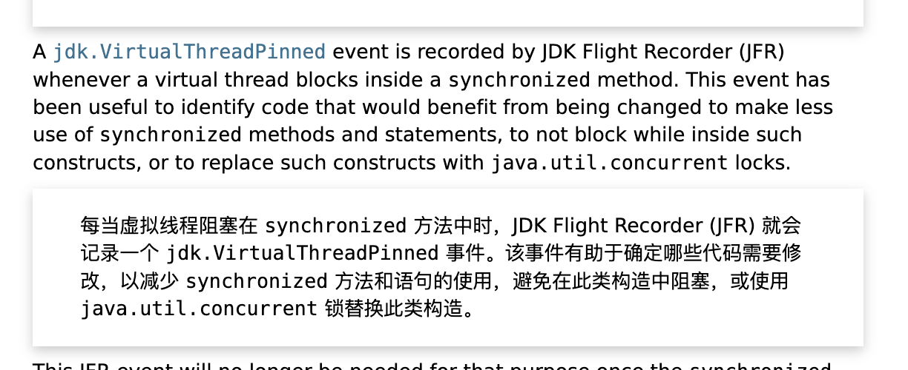
5.2.2、JFR监控
虚拟线程是由jvm管理的特质使得虚拟线程可以由jfr进行监控，jep444（ https://openjdk.org/jeps/444 ）文档中针对同步块中虚拟线程无法卸载的情况给出了jfr的监控方案

传统的线程池监控依赖于手动埋点，虚拟线程 JDK Flight Recorder 原生支持
对于虚拟线程jfr 通过几个新事件支持虚拟线程（文档： ``https://bugs.openjdk.org/browse/JDK-8277131 ``）
1、jdk.VirtualThreadStart 和 jdk.VirtualThreadEnd 表示虚拟线程开始和结束。这些事件默认为禁用。
2、jdk.VirtualThreadPinned 表示虚拟线程在被固定时停泊，即未释放其平台线程（请参阅讨论）。该事件默认启用，阈值为 20ms。
3、jdk.VirtualThreadSubmitFailed 表示启动或取消驻留虚拟线程失败，可能是由于资源问题。该事件默认已启用。
对于jfr的使用可以学习： https://www.bilibili.com/video/BV148411K742/?share_source=copy_web&vd_source=d30c780580db9da56e2e4f9fa6acf1a5
5.2.3、底层解决
未来jdk24已经从底层进行了解决： ``https://openjdk.org/jeps/491
1、LockingMode
主要是锁模式实现发生变化：-XX:LockingMode=2
- 传统锁模式（Locking Mode 1） ：
使用对象头 Mark Word 直接存储 平台线程指针 ，导致虚拟线程必须绑定到载体线程 - 新锁模式（Locking Mode 2） ：
- 引入 Lock Stack 数据结构，记录线程的锁持有状态（包括虚拟线程）
- 对象头 Mark Word 指向 Lock Stack 中的锁记录，而非平台线程指针
/**
* lock stack数据结构demo
*/
class JavaThread {
LockStack lockStack; // 每个线程（包括虚拟线程）独立的锁栈
}
class LockStack {
LockEntry[] entries; // 记录当前持有的锁
}
class LockEntry {
Object lock; // 锁对象
int recursionCount; // 重入次数
}
2、Monitor 重量锁模式
1）重量级锁记录虚拟线程 TID 而非 JavaThread 指针
2）EntryList 唤醒时兼容虚拟线程调度
六、落地
下一个LTS是JDK 25，由于JDK 21升级JDK 25是透明升级的，不牵涉代码变更，所以虚拟线程可以在生产环境落地。
6.1、使用场景
适合 高并发 I/O 密集型任务 ，对于cpu密集型的任务并无 优势， CPU 密集型任务需要持续占用 CPU，而虚拟线程的载体线程池默认大小与 CPU 核心数相同（ ForkJoinPool 的并行度）。若虚拟线程全部忙于计算，载体线程会被占满，用vt比用线程池有一些调度上的开销，所以对于cpu密集型的话不如使用传统线程池
6.2、堆外内存收益
由于线程栈存储位置的变化， 传统操作系统的线程（平台线程）需要固定的堆外内存（~1MB/线程）存储线程栈，而虚拟线程的栈由 JVM 托管在堆内存 中，按需动态扩展/收缩（类似普通对象），避免了预分配大块堆外内存，如果使用虚拟线程后会减少堆外内存的占用
参考文档与视频
异步发展史： 【[Devoxx2023]深入理解Java异步编程发展历史-从线程到响应式再到虚拟线程】
https://zhuanlan.zhihu.com/p/670651709?utm_psn=1875166905750401024
jep491的解决分析： https://mp.weixin.qq.com/s/e6EBjyN-nJM9ltGoxiTKlA